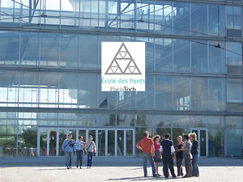

paristechinois
一. 课程
•课程介绍
基本都是国内没上过的课，或者国内上的时候打星号跳过的。这边的数学系偏计算和编程。
•如何选专业（如果有专业的话）各专业名称，及各专业人数分布情况
中国人分布为数学和土木。
•如何选课（选什么课程对以后的专业发展比较有用⋯⋯）
哪些课可选哪些课必选？
每个专业会有些必选课，其他可以任选别的专业或自己专业的课，学分够就可以了。
•上课形式（比如一节课多久啊，一般几次课后考试啊，考试形式开闭卷啊之类的）
一节课3小时，中间休息15分钟。基本每天从早上到晚……一般只有期末考试，闭卷。
•一些跟学校生活相关的网站？（比如查课表啊，学校给的邮箱啊，下课件啊等等）
学校主页，里面有课程网站。
•其他（比如学校的wifi怎么用，如何打印文件，想办什么事要去什么办公室找什么老师之类的）
这个来了就知道了，不难……
二.活动
•宿舍的活动（所住的宿舍楼是否有些活动⋯⋯）
最多的活动是和中国人一起做饭吃……
•社团介绍（体育的，文艺的，跟企业联系的等等⋯⋯）
没参加过，但是貌似种类还挺多的。
•soirée（谈谈你们学校soirée的频繁程度啊，在soirée都干些什么）
每周有两个foyer，每学期有几个大的soirée。主要是喝酒跳舞之类的。
•学校传统活动（parrainage等等⋯⋯）
开学时有一周旅游。
三.找实习
据说主要靠学校网站上提供的实习。我们学校有做一年长实习的传统。
作者简介:
左婷婷
2007-2011：北京大学
2011至今：Ecole des Ponts
左婷婷访谈

2012年1月28日星期六